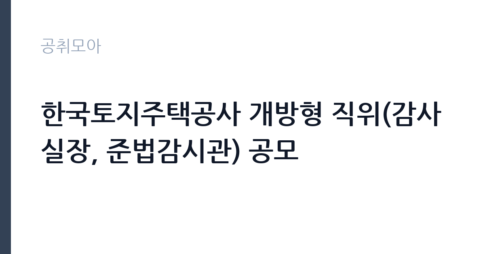

[공공기관] 한국토지주택공사 개방형 직위(감사실장, 준법감시관) 공모
한국토지주택공사 · 경남 · 마감 2026-10-07 (D-16) · 출처 나라일터

한눈에 보는 모집 조건
| 기관 | 한국토지주택공사 |
|---|---|
| 공고명 | 한국토지주택공사 개방형 직위(감사실장, 준법감시관) 공모 |
| 고용형태 | 임기제 |
| 근무지 | 경남 |
| 게시일 | 2026-09-22 |
| 마감일 | 2026-10-07 (D-16) |
지원자격, 이렇게 읽으세요
- 감사실장 1명 준법감시관 1명
- 접수 ~2026-10-07 마감
- 세부 조건은 원문 공고문 확인
지원자격의 핵심은 감사·수사·법조 분야의 경력 요건이다. 감사실장은 중앙행정기관이나 지방자치단체에서 감사나 수사 업무를 담당한 경력, 공공기관 감사부서의 책임자급 경력, 판사·검사·변호사 경력 등 여러 트랙 중 하나를 충족해야 하는 구조가 일반적이다. 준법감시관 역시 법학 전공이나 법조·준법감시 실무 경력이 요구된다. 어느 호에 해당하는지, 경력 산정 기준일과 증빙 서류는 원문 공고문에서 반드시 대조해야 한다. 호봉·경력 인정은 서류전형의 당락을 가르는 첫 관문이다.
이 공고의 포인트
이 공고의 포인트는 타이밍이다. 2026년 8월 언론 보도에 따르면 LH는 상임감사위원 후임 공모를 진행하며 경영진 재구성에 들어갔다. 감사실장·준법감시관 공모는 그 흐름과 맞물려 감사 기능 전반을 손보는 움직임으로 읽힌다. 감사 비전문가가 아니라 감사·수사 실무를 해본 사람을 찾는 자리이므로, 현직·전직 감사직 공무원과 공공기관 감사부서 출신에게 특히 유리한 판이다.
전형은 어떻게 진행되나
전형은 서류심사와 면접심사로 진행되는 것이 통상적이며, 개방형 임원급 직위는 임원추천위원회 심사를 거치는 경우가 많다. 서류에서는 경력 요건 해당 여부와 감사·준법 분야의 실적을 검증하고, 면접에서는 감사 철학과 독립성, LH 현안에 대한 시각을 묻는다. 세부 전형 단계와 일정, 제출 서류 목록은 원문 공고문의 전형 절차 항목에서 확인해야 한다.
이런 분께 추천해요
- 중앙부처·지자체에서 감사나 수사, 감찰 업무를 3년 이상 담당한 4~5급 이상 공무원 출신
- 공공기관이나 지방공기업 감사부서의 책임자급 이상으로 감사 실무를 이끈 경험자
- 판사·검사·변호사로 5년 이상 근무하며 건설·부동산 분야 분쟁이나 비위 사건을 다뤄본 법조인
지원 전 체크리스트
- 원문 공고문의 응시요건 각 호 중 본인이 어디에 해당하는지 확정한다
- 경력증명서와 재직증명서의 담당 업무 표기가 감사·수사 관련으로 명확한지 점검한다
- 공직자윤리법상 취업제한이나 공공기관 결격사유에 해당하지 않는지 확인한다
- 접수 마감일(10월 7일)과 접수 방법(방문·우편·온라인)을 원문에서 확인하고 여유 있게 접수한다
모집 일정과 제출 타이밍
접수는 2026년 10월 7일에 마감된다. 임원급 공모는 서류 접수 후 임원추천위원회 심사와 면접을 거쳐 10월 중순 이후 최종 선임 절차가 진행되는 흐름이 일반적이다. 다만 이번 공고의 구체적인 심사 일정은 원문 공고문에서 확인해야 한다. 지원 서류 중 경력기술서와 직무수행계획서는 하루 만에 쓸 수 있는 분량이 아니므로, 마감 최소 일주일 전부터 준비에 들어가는 것이 안전하다.
직무 이해하기: 공공기관
감사실장은 LH 전 임직원을 대상으로 하는 내부감사의 총괄 책임자다. 정기 종합감사와 특정감사, 일상감사, 청렴도 조사와 비위 적발 시 처분 요구까지 감사 사이클 전체를 지휘한다. 준법감시관은 법규 준수 체계를 설계하는 자리로, 내부통제 기준을 만들고 임직원 교육과 법규 위반 모니터링을 맡는다. LH처럼 대규모 발주와 분양, 보상 업무가 얽힌 기관에서는 감사와 준법감시 라인이 경영 리스크를 틀어쥐는 핵심 축이다.
자기소개서 작성 팁
지원 서류의 핵심은 직무수행계획서다. 추상적인 청렴 구호가 아니라, LH의 실제 감사 수요를 짚어야 한다. 최근 언론에 보도된 LH 관련 이슈(경영진 재구성, 감사 기능 강화 흐름)를 언급하며 본인의 감사 철학과 감사 운영 방안을 연결하는 구성이 설득력이 있다. 과거에 직접 수행한 감사나 수사, 준법감시 실적은 건수와 규모, 결과 처분까지 수치로 제시하는 것이 좋다.
면접 준비 포인트
면접에서는 감사 독립성을 어떻게 지킬 것인지가 단골 질문이다. 기관장이나 노조, 외부 압력이 있는 상황에서 감사 의견을 굽히지 않은 경험을 구체적 사례로 준비해야 한다. 준법감시관 지원자는 내부통제 체계 구축 경험과 법규 위반 사례 대응 경험을 묻는다. LH 현안에 대한 질문도 나올 수 있으니, 최근 LH 관련 보도를 정리하고 본인의 시각을 정돈해 두는 것이 필요하다.
급여·근무조건 읽는 법
구체적인 보수액은 원문 공고문의 보수 항목에서 확인해야 한다. 참고로 공공기관 경영정보 공개시스템 알리오와 언론 보도에 따르면 1군 공기업 상임감사의 연봉은 약 2억 원대(인천공항공사 상임감사 2019년 연봉 1억 9,637만 원, 중앙일보 보도) 수준으로 알려져 있다. 다만 감사실장과 준법감시관은 상임감사와는 다른 개방형 직위이므로 이 수치를 그대로 적용할 수 없고, 임기제 보수 규정에 따라 협의·결정되는 구조가 일반적이다. 정확한 금액은 원문에서 확인하기 바란다. 경쟁률과 합격선은 공개되지 않으므로 원문에서 확인해야 한다.
자주 묻는 질문
- 임기는 어떻게 되나요?
개방형 임기제 직위로 임용되며, 통상 2년 임기에 성과에 따라 연장되는 구조가 일반적이다. 정확한 임기와 연장 조건은 원문 공고문에서 확인해야 한다. - 현직 공무원도 지원할 수 있나요?
응시요건 중 공무원 경력 트랙이 별도로 마련된 경우가 많으므로, 요건에 해당하면 지원 가능하다. 다만 임용 시점의 사직·휴직 처리 등 절차는 원문과 소속 기관 규정을 확인해야 한다. - 감사실장과 준법감시관에 중복 지원이 가능한가요?
동시 진행 공고의 중복 지원은 제한되는 경우가 많으므로 둘 중 본인의 경력에 더 맞는 한 자리를 선택하는 것이 안전하다. 가능 여부는 원문 공고문에서 확인해야 한다.
함께 보면 좋은 공고
[공공기관] 한국도로공사 비상임이사 공모 — 마감 2026-09-29[공공기관] 2026년 하반기 2차 중소벤처기업진흥공단 체험형 청년인턴(장애인) 채용 공고 — 마감 2026-10-12[공공기관] 한국환경공단 화학안전지원단 생활환경안전처 주거환경관리부 기간제근로자(촉탁라급) 채용 — 마감 2026-10-06출처: 나라일터 공개정보를 바탕으로 공취모아가 정리한 안내글입니다. 모집 조건·일정은 변경될 수 있으니 지원 전 반드시 원문 공고문을 확인하세요. 본 글은 정보 제공용이며 합격을 보장하지 않습니다.